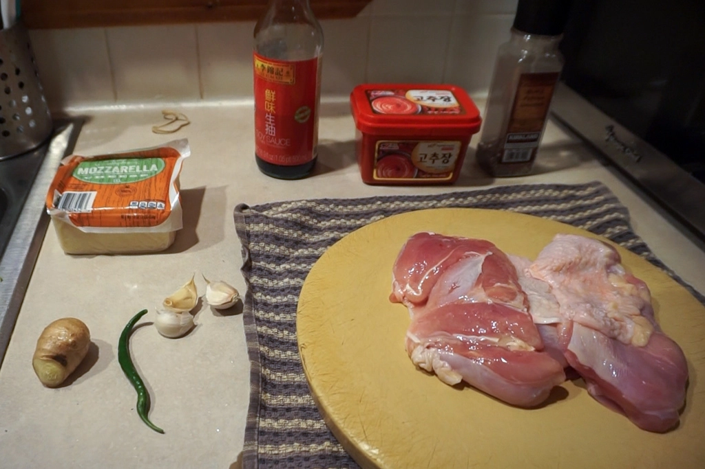
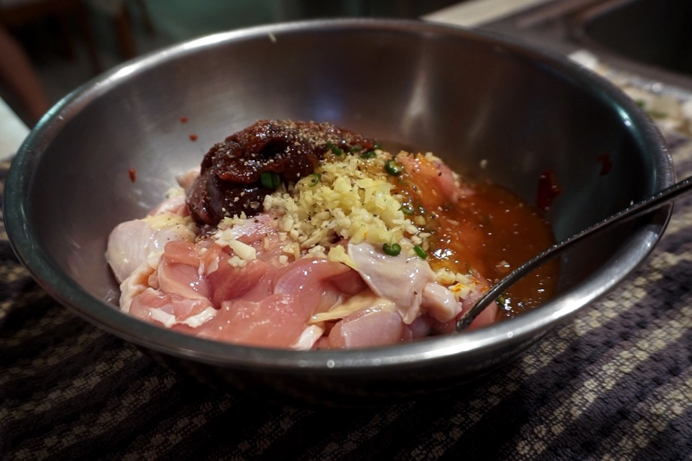
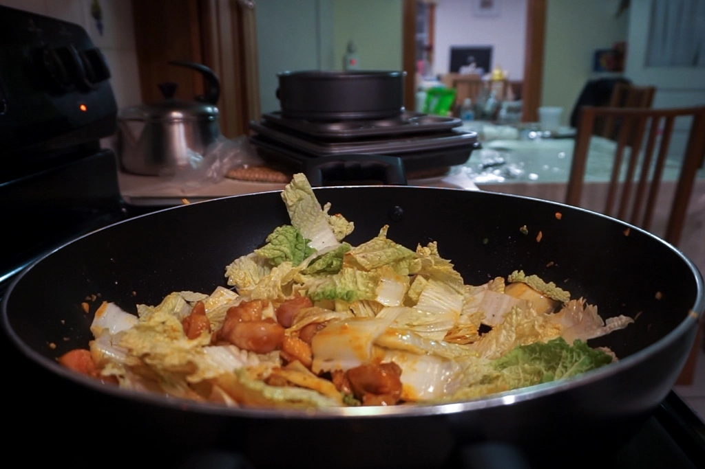
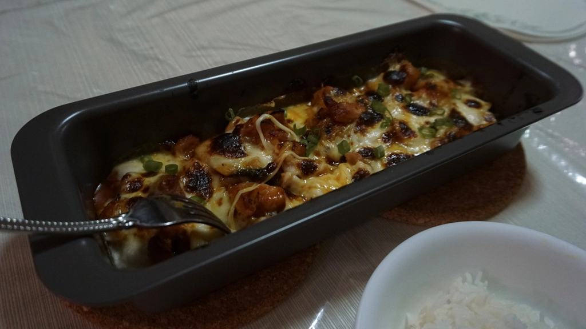
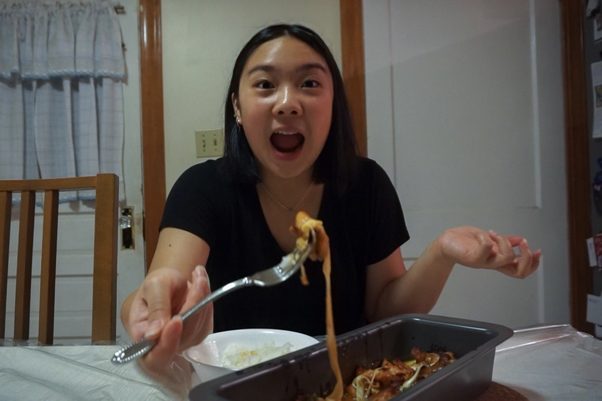

Making Cheese Buldak!
Jul 18 - Written by Bonnie
You’ve heard of the extremely spicy Buldak ramen thats been floating around for a while now but have you heard of Buldak chicken!? With this being our first cooking video we had to pick a delicious and quick dish for all of you to try along with us!
This perfect combination of marinated chicken and ooey gooey mozzarella cheese is one of my favorite dishes. Not only is it easy to make but also so delicious to have with a warm bowl of white rice! What's even better about this dish is that you can add as many other ingredients into the chicken marinade to your liking.
Pulling the recipe from one of my favorite Korean recipe blogger, Maangchi, this was a perfect recipe to make after work when you’re short on time. Although most of the ingredients can be easily found in your pantry, there is one specific ingredient crucial to this dish, red pepper paste. You can typically find red pepper paste and soy sauce at your local asian grocery store and even replace hot pepper flakes with fresh peppers like I did!
Since we bake our chicken after cooking it on the stove, chicken breast can dry out quickly, so instead you can substitute it with chicken thighs which will keep your fire chicken juicy and tender even after baking. Despite having some struggles cutting up the chicken, I finally had all my chicken thigh pieces into 1 inch cubes perfect for marinating. The marinade is definitely one of the key things that makes the fire chicken dish so delicious. Since its a one pan dish, all you have to do is mix the ingredients listed in the recipe and make sure to mix it in with the chicken as thoroughly as possible.
One of my favorite kitchen tools to use are actually disposable gloves! They are super convenient to use especially when you have to bake or cook with things that could be easier using your hands. You can even find a pack of 100 disposable gloves at your local one dollar store for super cheap! Here I decided to use disposable gloves to mix in the marinade because the red pepper paste is a pretty thick sauce that sometimes requires a little more care to make sure its spread out evenly.
Since the original recipe only includes chicken and cheese, I decided to also add some vegetables into the dish to add some more flavor. One of my favorite vegetables to cook with is napa cabbage especially because it soaks up sauces and flavors so well it was perfect to throw in with my fire chicken. If you can’t find napa cabbage, you can also substitute with lettuce or regular cabbage that also soaks sauce up really well! Once all my ingredients were ready, I cooked the chicken by itself on the stove first to make sure that the chicken had been cooked through. Once the chicken was mostly cooked through, I threw in all the napa cabbage and covered the pan with a lid. Since napa cabbage cooks really easily, covering the pan for a few minutes its definitely enough for all your ingredients to be cooked through!
Now that the chicken and cabbage are cooked, all you have to do is throw your chicken into a baking pan and top with delicious cubes of mozzarella cheese. If you don’t want to top your chicken with too much cheese or you don’t want to start your oven, you can also use shredded mozzarella cheese that will easily melt due to the heat from the chicken!
Maangchi actually suggests cooking the chicken in a cast iron skillet so that you can stick the entire pan in the oven but since I didn’t have a cast iron skillet, I found out that transferring the chicken to a baking pan does the job too! Since the main reason we put the dish in the oven is to melt the cheese, we actually broil it in the oven instead of baking since baking can take longer and could overcook the chicken.
Once I broiled it to my personal choice of how ooey gooey I wanted the cheese to be, I pulled it out of the oven to, of course, do the best part--the cheese pull. I also love to eat this fire chicken dish with a bowl of rice to mix in the delicious sauce. This recipe is so delicious and definitely one of my go to recipes to make especially on a busy day. Just thinking about it makes me want to make this fire chicken dish again! Hopefully this blog post and video will inspire you to try this recipe out too.